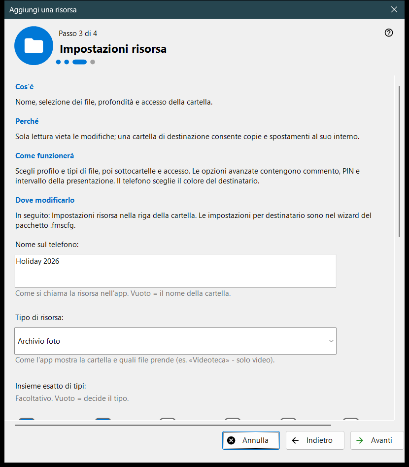
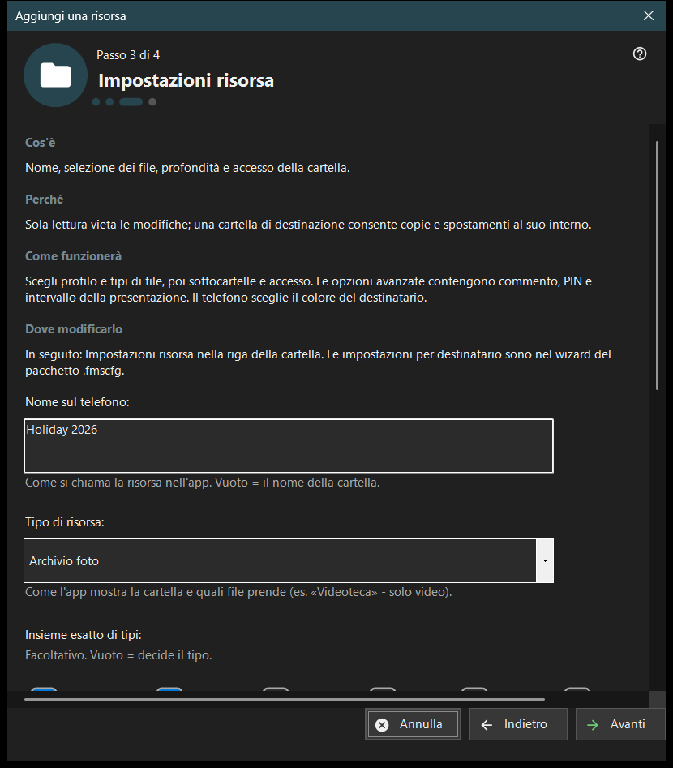

Aggiungi una risorsa
Scopo
Una breve procedura guidata che aggiunge una risorsa condivisa: una cartella o un disco FileDO già aperto. Si apre dalla voce «Creazione guidata aggiunta risorsa..» del menu Aggiungi.. e dal flusso del primo avvio, e termina aggiungendo la risorsa all'elenco condiviso.


In questo ordine
- Leggi che cos'è una risorsa e premi «Avanti».
- Premi «Scegli una cartella..» e scegli la cartella.
- Imposta nome, tipo e accesso nella pagina «Impostazioni risorsa».
- Controlla il riepilogo e premi «Fine».
- Usa i pulsanti dell'ultima pagina per mostrare il codice QR o aprire le impostazioni.
Gli elementi
Che cos'è una risorsa
Una risorsa è una cartella o un disco virtuale FileDO aperto che il visualizzatore raggiunge tramite questo PC. I file restano sul computer; il telefono li sfoglia e li copia tramite la connessione, e una cartella spuntata nell'elenco è quella che viene servita.
Scegliere una cartella
«Scegli una cartella..» apre la consueta finestra di selezione delle cartelle e «Dischi FileDO..» elenca i dischi aperti. Una cartella già presente nell'elenco viene rifiutata con «Quella cartella è già nell'elenco.» Scegli dischi FileDO già aperti; la procedura guidata non li crea né li monta.
Impostazioni risorsa
Il nome sul telefono, il tipo, l'insieme esatto dei media, le condizioni di scansione e l'accesso. «Sola lettura» vieta le modifiche; una cartella di destinazione consente di copiarvi e spostarvi file. «Opzioni avanzate» contengono il commento, il PIN e l'intervallo dello slideshow. Il colore della destinazione lo sceglie il telefono.
Risorsa e azioni successive
«Fine» salva le impostazioni e aggiunge la risorsa; fino ad allora annullare non cambia nulla. L'ultima pagina dice se la risorsa viene servita. Se il server è spento il telefono non la vede ancora; se il servizio non è confermato, controlla le impostazioni. «Mostra il QR code» apre il codice di accesso, «Impostazioni..» le impostazioni del gestore, «Chiudi» esce dalla procedura guidata.
Impostazioni del gestore · Impostazioni condivisione SFTP · Impostazioni server di scambio